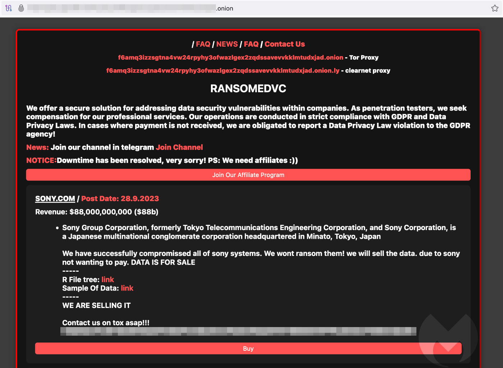

Geplaatst: 25 september 2023 door Mark Stockley
Nieuwkomer ransomware groep RansomedVC beweert met succes de computersystemen van enterainment gigant Sony te hebben gecompromitteerd. Zoals ransomwarebendes doen, maakte het de aankondiging op zijn dark web website, waar het data verkoopt die het heeft gestolen van het computernetwerk van slachtoffers.
In de aankondiging staat dat Sony's gegevens te koop zijn:
Sony heeft nog geen commentaar gegeven op de zaak en het is belangrijk om te begrijpen dat we maar één kant van het verhaal hebben en die kant komt van een groep criminelen. De beweringen over Sony's compromittering kunnen nog vals blijken te zijn of, misschien nog waarschijnlijker, overdreven.
Maar als we RansomeVC mogen geloven, is Sony niet gezwicht voor de losgeldeisen van de groep, dus goed van Sony, bravo. Soms hebben bedrijven het gevoel dat ze hun afperser moeten betalen, en we gaan niemand veroordelen voor het maken van die keuze. Maar we zijn zeker blij om luid te applaudisseren als ze niet betalen.
Als Sony is gekraakt, is het begrijpelijk dat haar klanten zich zorgen maken over het beschermen van hun gegevens. Met zo weinig informatie is het nog te vroeg om specifiek advies te geven, maar we raden u aan onze gids te lezen voorWat je moet weten als je betrokken bent bij een datalek.
Als de inbreuk wordt bevestigd, voegt Sony zich bij een lange lijst van games- en entertainmentbedrijven waarvan gegevens zijn gestolen of achterhaald. Gamesbedrijven zijn uitstekende doelwitten voor diefstal en afpersing vanwege de hoge waarde en het hoge profiel van hun intellectuele eigendom.
Opvallende slachtoffers waren Capcom en Ubisoft in 2020 en CD PROJEKT RED, makers van Cyberpunk 2077 en Witcher 3, in 2021, in hetzelfde jaar dat de broncode van FIFA 21 werd gestolen van Electronic Arts. In 2022 werd Bandai Namco aangevallen door ransomware en kreeg Rockstar Games te maken met een ernstige inbreuk door toedoen van de kortstondige lapsus$gang.
RansomedVC is een nieuwe ransomware groep, voor het eerst opgespoord door Malwarebytes in augustus 2023 nadat het de details van negen slachtoffers had gepubliceerd op zijn dark web site. De enige afwijking van de gebruikelijke cut 'n' paste criminaliteit van ransomeware groepen is dat het dreigt slachtoffers aan te geven voor overtredingen van de General Data Protection Regulation (GDPR). Het beschrijft zichzelf als een "digitale belasting voor vrede", maar dat is het natuurlijk niet. We hebben dit al een miljoen keer eerder gehoord en het is altijd gewoon een greep in de kas.